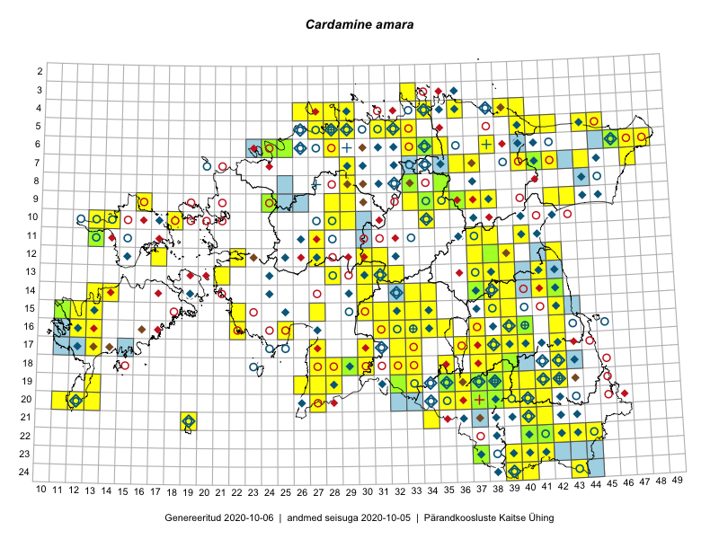

Cardamine amara
Uuendatud: 2016-12-08
Kaardile koondatud taksonid: Cardamine amara L.

Kaart põhineb 164 kirjel, neist vaatlusi 156 ja eksemplare 8. Taksonit on leitud 127 ruudust.
| Ruut | Vaatleja(d) | Vaatlusaeg | Kirje tüüp | Viide andmebaasikirjele |
|---|---|---|---|---|
| ? | Malle Leht | 2015-05-16 | ruut/ala | vaata PlutoFis |
| 09-43 | Peedu Saar | 2015-05-14 | ruut/ala | vaata PlutoFis |
| 18-27 | Peedu Saar, Liina Oja | 2015-05-20 | ruut/ala | vaata PlutoFis |
| 09-16 | Peedu Saar, Toomas Kukk | 2015-05-27 | ruut/ala | vaata PlutoFis |
| 07-42 | Toomas Kukk, Peedu Saar | 2014-09-25 | ruut/ala | vaata PlutoFis |
| 05-45 | Tiit Hallikma, Toomas Kukk | 2015-07-21 | ruut/ala | vaata PlutoFis |
| 14-41 | Peedu Saar, Ott Luuk | 2015-06-21 | ruut/ala | vaata PlutoFis |
| 14-42 | Peedu Saar, Ott Luuk | 2015-06-21 | ruut/ala | vaata PlutoFis |
| 15-38 | Peedu Saar | 2015-07-14 | ruut/ala | vaata PlutoFis |
| 10-34 | Peedu Saar, Liina Oja | 2015-06-08 | ruut/ala | vaata PlutoFis |
| 14-30 | Peedu Saar, Liina Oja | 2015-06-10 | ruut/ala | vaata PlutoFis |
| 07-47 | Peedu Saar, Sander Laherand | 2015-05-31 | ruut/ala | vaata PlutoFis |
| 07-41 | Peedu Saar, Sander Laherand | 2015-06-01 | ruut/ala | vaata PlutoFis |
| 07-42 | Peedu Saar, Sander Laherand | 2015-06-01 | ruut/ala | vaata PlutoFis |
| 15-30 | Tiit Hallikma, Toomas Kukk | 2015-06-10 | ruut/ala | vaata PlutoFis |
| 15-31 | Toomas Kukk, Tiit Hallikma | 2015-06-10 | ruut/ala | vaata PlutoFis |
| 06-46 | Toomas Kukk, Tiit Hallikma, Meeli Mesipuu | 2015-05-31 | ruut/ala | vaata PlutoFis |
| 12-39 | Peedu Saar, Eerik Leibak | 2015-08-16 | ruut/ala | vaata PlutoFis |
| 07-44 | Tiit Hallikma, Toomas Kukk | 2015-07-20 | ruut/ala | vaata PlutoFis |
| 11-38 | Peedu Saar, Eerik Leibak | 2015-08-18 | ruut/ala | vaata PlutoFis |
| 07-41 | Toomas Kukk, Peedu Saar | 2014-07-10 | ruut/ala | vaata PlutoFis |
| 17-39 | Thea Kull, Peedu Saar | 2015-06-17 | ruut/ala | vaata PlutoFis |
| 20-35 | Ott Luuk, Hannes Pehlak | 2015-06-12 | ruut/ala | vaata PlutoFis |
| 17-38 | Thea Kull, Peedu Saar | 2015-06-17 | ruut/ala | vaata PlutoFis |
| 18-38 | Toomas Kukk, Peedu Saar, Mall Värva, Sander Laherand | 2014-07-27 | ruut/ala | vaata PlutoFis |
| 19-35 | Ott Luuk, Hannes Pehlak | 2015-06-12 | ruut/ala | vaata PlutoFis |
| 17-30 | Ott Luuk, Hannes Pehlak | 2015-06-11 | ruut/ala | vaata PlutoFis |
| 12-31 | Ott Luuk, Hannes Pehlak | 2015-06-09 | ruut/ala | vaata PlutoFis |
| 13-37 | Eeva-Maria Jeletsky, Tarmo Niitla | 2015-05-17 | ruut/ala | vaata PlutoFis |
| 16-25 | Indrek Tammekänd | 2015-09-18 | ruut/ala | vaata PlutoFis |
| 18-38 | Toomas Kukk, Sander Laherand, Peedu Saar, Mall Värva | 2014-07-27 | punkt | vaata PlutoFis |
| 07-29 | Toomas Kukk, Thea Kull | 2014-08-20 | ruut/ala | vaata PlutoFis |
| 16-42 | Peedu Saar | 2015-05-16 | ruut/ala | vaata PlutoFis |
| 16-22 | Indrek Tammekänd, Jaak Tammekänd, Raivo Endrekson | 2015-06-01 | punkt | vaata PlutoFis |
| 08-33 | Jana-Maria Habicht, Ester Valdvee | 2015-05-29 | ruut/ala | vaata PlutoFis |
| 08-35 | Jana-Maria Habicht, Ester Valdvee, Kirke Pilvik | 2015-07-14 | ruut/ala | vaata PlutoFis |
| 09-34 | Jana-Maria Habicht, Ester Valdvee, Kirke Pilvik | 2015-07-25 | ruut/ala | vaata PlutoFis |
| 09-35 | Jana-Maria Habicht, Ester Valdvee, Tiiu Liimets | 2015-07-07 | ruut/ala | vaata PlutoFis |
| 14-38 | Eeva-Maria Jeletsky, Tarmo Niitla | 2015-05-16 | ruut/ala | vaata PlutoFis |
| 12-17 | Eeva-Maria Jeletsky, Tarmo Niitla | 2015-06-21 | ruut/ala | vaata PlutoFis |
| 15-33 | Maria Abakumova | 2015-07-23 | ruut/ala | vaata PlutoFis |
| 15-34 | Maria Abakumova, Helle Mäemets | 2015-07-30 | ruut/ala | vaata PlutoFis |
| 16-32 | Maria Abakumova | 2015-07-07 | ruut/ala | vaata PlutoFis |
| 19-37 | Eeva-Maria Jeletsky, Tarmo Niitla | 2015-08-10 | ruut/ala | vaata PlutoFis |
| 19-38 | Eeva-Maria Jeletsky, Tarmo Niitla | 2015-08-12 | ruut/ala | vaata PlutoFis |
| 20-37 | Eeva-Maria Jeletsky, Tarmo Niitla | 2015-08-10 | ruut/ala | vaata PlutoFis |
| 20-11 | Mari Reitalu, Triin Reitalu | 2014-08-15 | ruut/ala | vaata PlutoFis |
| 17-32 | Maria Abakumova, Tiit Hallikma | 2015-07-09 | ruut/ala | vaata PlutoFis |
| 18-32 | Maria Abakumova, Tiit Hallikma | 2015-07-09 | ruut/ala | vaata PlutoFis |
| 20-38 | Eeva-Maria Jeletsky, Tarmo Niitla | 2015-08-11 | ruut/ala | vaata PlutoFis |
| 13-38 | Ülle Jõgar, Illi Tarmu, Kai Rünk | 2015-07-03 | ruut/ala | vaata PlutoFis |
| 20-13 | Mari Reitalu, Oliver Parrest | 2015-05-26 | ruut/ala | vaata PlutoFis |
| 19-32 | Maria Abakumova, Tiit Hallikma | 2015-07-11 | ruut/ala | vaata PlutoFis |
| 15-34 | Maria Abakumova | 2015-05-11 | ruut/ala | vaata PlutoFis |
| 16-33 | Maria Abakumova | 2015-05-05 | ruut/ala | vaata PlutoFis |
| 19-35 | Kai Rünk, Ülle Jõgar, Illi Tarmu | 2015-05-16T07:00Z | ruut/ala | vaata PlutoFis |
| 06-34 | Kai Rünk, Ülle Jõgar, Illi Tarmu | 2015-05-22T10:00Z | ruut/ala | vaata PlutoFis |
| 17-13 | Mari Reitalu, Oliver Parrest | 2015-08-12 | ruut/ala | vaata PlutoFis |
| 18-33 | Maria Abakumova, Helle Mäemets | 2015-05-25 | ruut/ala | vaata PlutoFis |
| 18-32 | Maria Abakumova, Helle Mäemets | 2015-05-23 | ruut/ala | vaata PlutoFis |
| 15-12 | Mari Reitalu, Oliver Parrest | 2015-07-21 | ruut/ala | vaata PlutoFis |
| 19-32 | Maria Abakumova, Helle Mäemets | 2015-05-23 | ruut/ala | vaata PlutoFis |
| 15-13 | Mari Reitalu, Oliver Parrest | 2015-07-24 | ruut/ala | vaata PlutoFis |
| 20-11 | Mari Reitalu, Oliver Parrest | 2015-05-26 | ruut/ala | vaata PlutoFis |
| 21-19 | Oliver Parrest | 2015-05-29 | ruut/ala | vaata PlutoFis |
| 20-12 | Mari Reitalu, Oliver Parrest | 2015-05-26 | ruut/ala | vaata PlutoFis |
| 17-42 | Kirsi Loide, Marje Loide | 2015-04-29T07:00Z | ruut/ala | vaata PlutoFis |
| 18-42 | Kirsi Loide, Marje Loide | 2015-04-30T07:00Z | ruut/ala | vaata PlutoFis |
| 19-42 | Kirsi Loide, Marje Loide | 2015-05-01T07:00Z | ruut/ala | vaata PlutoFis |
| 19-42 | Kirsi Loide, Marje Loide | 2015-07-29 | ruut/ala | vaata PlutoFis |
| 14-42 | Karin Kikas, Elle Rajandu | 2015-05-18 | ruut/ala | vaata PlutoFis |
| 20-12 | Oliver Parrest | 2015-08-15 | ruut/ala | vaata PlutoFis |
| 13-30 | Meeli Mesipuu, Timo Luhamäe | 2015-06-10 | ruut/ala | vaata PlutoFis |
| 18-28 | Meeli Mesipuu, Timo Luhamäe | 2015-06-09 | ruut/ala | vaata PlutoFis |
| 22-41 | Eeva-Maria Jeletsky, Tarmo Niitla | 2015-08-04 | ruut/ala | vaata PlutoFis |
| 10-29 | Toivo Sepp, Aat Sarv | 2015-05-06 | ruut/ala | vaata PlutoFis |
| 13-31 | Meeli Mesipuu, Timo Luhamäe | 2015-06-08 | ruut/ala | vaata PlutoFis |
| 06-47 | Timo Luhamäe, Eerik Leibak | 2015-06-01 | ruut/ala | vaata PlutoFis |
| 06-48 | Timo Luhamäe, Eerik Leibak | 2015-06-01 | ruut/ala | vaata PlutoFis |
| 05-45 | Meeli Mesipuu | 2015-06-01 | ruut/ala | vaata PlutoFis |
| 05-45 | Meeli Mesipuu | 2015-06-01 | punkt | vaata PlutoFis |
| 05-44 | Meeli Mesipuu | 2015-06-01 | ruut/ala | vaata PlutoFis |
| 11-13 | Meeli Mesipuu, Timo Luhamäe | 2015-05-27 | ruut/ala | vaata PlutoFis |
| 06-25 | Mari Metsoja, Jaak-Albert Metsoja | 2015-05-16 | ruut/ala | vaata PlutoFis |
| 18-35 | Helle Mäemets, Mare Leis | 2015-06-24 | ruut/ala | vaata PlutoFis |
| 17-36 | Helle Mäemets, Mare Leis | 2015-06-25 | ruut/ala | vaata PlutoFis |
| 05-42 | Kaili Orav, Silvia Pihu | 2015-06-18 | ruut/ala | vaata PlutoFis |
| 06-38 | Kaili Orav, Silvia Pihu | 2015-07-20 | ruut/ala | vaata PlutoFis |
| 05-44 | Meeli Mesipuu | 2015-06-01 | punkt | vaata PlutoFis |
| 04-40 | Kaili Orav, Silvia Pihu | 2015-07-21 | ruut/ala | vaata PlutoFis |
| 16-35 | Aat Sarv | 2015-05-21 | ruut/ala | vaata PlutoFis |
| 05-29 | Tiina Elvisto, Kadi-Liis Kesler | 2015-05-12 | ruut/ala | vaata PlutoFis |
| 10-28 | Aat Sarv | 2015-05-16 | ruut/ala | vaata PlutoFis |
| 09-16 | Toomas Kukk, Peedu Saar | 2016-05-08 | ruut/ala | vaata PlutoFis |
| 05-40 | Ott Luuk, Tiit Hallikma | 2016-05-20 | ruut/ala | vaata PlutoFis |
| 04-39 | Ott Luuk, Tiit Hallikma | 2016-05-19 | ruut/ala | vaata PlutoFis |
| 09-37 | Ulvi Selgis | 2016-05-21 | ruut/ala | vaata PlutoFis |
| 09-24 | Ott Luuk, Tiit Hallikma | 2016-05-13 | ruut/ala | vaata PlutoFis |
| 05-29 | Peedu Saar | 2016-05-24 | ruut/ala | vaata PlutoFis |
| 09-29 | Ott Luuk, Thea Kull | 2016-05-30 | ruut/ala | vaata PlutoFis |
| 07-29 | Meeli Mesipuu, Thea Kull | 2016-06-02 | punkt | vaata PlutoFis |
| 07-29 | Thea Kull, Meeli Mesipuu | 2016-06-02 | ruut/ala | vaata PlutoFis |
| 06-28 | Toomas Kukk | 2016-06-06 | ruut/ala | vaata PlutoFis |
| 20-27 | Thea Kull, Peedu Saar | 2016-06-06 | ruut/ala | vaata PlutoFis |
| 19-38 | Meeli Mesipuu, Timo Luhamäe | 2016-06-13 | ruut/ala | vaata PlutoFis |
| 24-43 | Meeli Mesipuu, Timo Luhamäe | 2016-06-15 | ruut/ala | vaata PlutoFis |
| 23-39 | Meeli Mesipuu, Timo Luhamäe | 2016-06-16 | ruut/ala | vaata PlutoFis |
| 19-40 | Toomas Kukk, Tiit Hallikma, Johannes Kõdar | 2016-06-13 | ruut/ala | vaata PlutoFis |
| 22-43 | Toomas Kukk, Tiit Hallikma, Johannes Kõdar | 2016-06-15 | ruut/ala | vaata PlutoFis |
| 11-37 | Eeva-Maria Jeletsky, Tarmo Niitla | 2016-06-09 | ruut/ala | vaata PlutoFis |
| 11-38 | Eeva-Maria Jeletsky, Tarmo Niitla | 2016-06-09 | ruut/ala | vaata PlutoFis |
| 23-41 | Sander Laherand, Ott Luuk, Susanna Vain | 2016-06-15 | ruut/ala | vaata PlutoFis |
| 23-40 | Sander Laherand, Ott Luuk, Susanna Vain | 2016-06-14 | ruut/ala | vaata PlutoFis |
| 21-41 | Ott Luuk, Sander Laherand | 2016-06-16 | ruut/ala | vaata PlutoFis |
| 19-39 | Peedu Saar, Tarmo Niitla | 2016-06-13 | ruut/ala | vaata PlutoFis |
| 19-36 | Peedu Saar, Tarmo Niitla | 2016-06-14 | ruut/ala | vaata PlutoFis |
| 20-41 | Peedu Saar, Tarmo Niitla | 2016-06-16 | ruut/ala | vaata PlutoFis |
| 20-40 | Peedu Saar, Tarmo Niitla | 2016-06-17 | ruut/ala | vaata PlutoFis |
| 12-39 | Eeva-Maria Jeletsky, Tarmo Niitla | 2016-06-26 | ruut/ala | vaata PlutoFis |
| 18-27 | Peedu Saar, Ott Luuk | 2016-06-10 | ruut/ala | vaata PlutoFis |
| 06-24 | Thea Kull, Helle Mäemets | 2016-07-07 | ruut/ala | vaata PlutoFis |
| 18-29 | Indrek Tammekänd, Tuuli Teppo | 2016-06-06 | punkt | vaata PlutoFis |
| 10-18 | Eeva-Maria Jeletsky, Tarmo Niitla | 2016-07-14 | ruut/ala | vaata PlutoFis |
| 18-39 | Tarmo Niitla, Peedu Saar | 2016-06-13 | ruut/ala | vaata PlutoFis |
| 20-36 | Tarmo Niitla, Peedu Saar | 2016-06-14 | ruut/ala | vaata PlutoFis |
| 21-40 | Tarmo Niitla, Peedu Saar | 2016-06-17 | ruut/ala | vaata PlutoFis |
| 07-40 | Toomas Kukk, Tiit Hallikma | 2016-07-29 | ruut/ala | vaata PlutoFis |
| 09-42 | Ott Luuk, Eerik Leibak | 2016-08-05 | ruut/ala | vaata PlutoFis |
| 09-38 | Ott Luuk, Eerik Leibak | 2016-08-08 | ruut/ala | vaata PlutoFis |
| 07-36 | Thea Kull, Timo Luhamäe | 2016-07-27 | ruut/ala | vaata PlutoFis |
| 12-30 | Aat Sarv, Indrek Tammekänd | 2016-07-22 | ruut/ala | vaata PlutoFis |
| 19-38 | Timo Luhamäe, Meeli Mesipuu | 2016-06-13 | punkt | vaata PlutoFis |
| 04-29 | Sander Laherand, Tõnu Ploompuu, Nele Jõessar | 2016-07-25 | ruut/ala | vaata PlutoFis |
| 04-28 | Sander Laherand, Tõnu Ploompuu, Nele Jõessar | 2016-07-25 | ruut/ala | vaata PlutoFis |
| 12-22 | Mari Reitalu, Oliver Parrest | 2016-07-05 | ruut/ala | vaata PlutoFis |
| 21-34 | Peedu Saar, Ott Luuk | 2016-09-22 | ruut/ala | vaata PlutoFis |
| 16-12 | Mari Reitalu | 2016-07-16 | ruut/ala | vaata PlutoFis |
| 15-11 | Meeli Mesipuu, Toomas Kukk, Mari Reitalu | 2016-10-07 | ruut/ala | vaata PlutoFis |
| 05-42 | Tiit Hallikma, Tõnu Ploompuu | 2016-07-26 | ruut/ala | vaata PlutoFis |
| 05-41 | Tiit Hallikma, Tõnu Ploompuu | 2016-07-26 | ruut/ala | vaata PlutoFis |
| 18-38 | Ott Luuk, Thea Kull | 2016-08-23 | ruut/ala | vaata PlutoFis |
| 05-28 | Kadi-Liis Kesler, Tiina Elvisto | 2015-05-12 | ruut/ala | vaata PlutoFis |
| 05-29 | Kadi-Liis Kesler, Tiina Elvisto | 2015-05-12 | ruut/ala | vaata PlutoFis |
| 05-27 | Kadi-Liis Kesler | 2015-05-30 | ruut/ala | vaata PlutoFis |
| 11-27 | Ranno Puumets | 2016-05-01 | ruut/ala | vaata PlutoFis |
| 09-33 | Ott Luuk, Eerik Leibak | 2016-07-25 | ruut/ala | vaata PlutoFis |
| 14-33 | Ott Luuk, Indrek Tammekänd | 2016-07-21 | ruut/ala | vaata PlutoFis |
| 15-22 | Meeli Mesipuu, Sirje Azarov | 2016-07-04 | ruut/ala | vaata PlutoFis |
| 04-28 | Kadi-Liis Kesler, Tiina Elvisto | 2015-05-27 | ruut/ala | vaata PlutoFis |
| 04-29 | Kadi-Liis Kesler, Tiina Elvisto | 2015-05-27 | ruut/ala | vaata PlutoFis |
| 19-41 | Ott Luuk, Sander Laherand, Susanna Vain | 2016-06-13 | ruut/ala | vaata PlutoFis |
| 24-40 | Ott Luuk, Sander Laherand, Susanna Vain | 2016-06-14 | ruut/ala | vaata PlutoFis |
| 22-44 | Jaak-Albert Metsoja, Mari Metsoja | 2016-06-15 | ruut/ala | vaata PlutoFis |
| 23-40 | Ott Luuk, Sander Laherand, Susanna Vain | 2016-06-14 | punkt | vaata PlutoFis |
| 04-34 | Hannes Pehlak, Toomas Kukk | 2016-07-26 | ruut/ala | vaata PlutoFis |
| 19-27 | Ott Luuk, Meeli Mesipuu | 2016-08-15 | ruut/ala | vaata PlutoFis |
| 07-41 | Peedu Saar, S. Laherand | 2015-05-12 | eksemplar | vaata PlutoFis |
| 08-33 | Jana-Maria Habicht | 2015-07-29 | eksemplar | vaata PlutoFis |
| 09-34 | Jana-Maria Habicht | 2015-07-25 | eksemplar | vaata PlutoFis |
| 09-34 | Jana-Maria Habicht | 2015-07-25 | eksemplar | vaata PlutoFis |
| 09-34 | Jana-Maria Habicht | 2015-07-25 | eksemplar | vaata PlutoFis |
| 09-34 | Jana-Maria Habicht | 2015-07-25 | eksemplar | vaata PlutoFis |
| 08-35 | Jana-Maria Habicht | 2015-07-14 | eksemplar | vaata PlutoFis |
| 09-36 | Jana-Maria Habicht | 2015-07-07 | eksemplar | vaata PlutoFis |